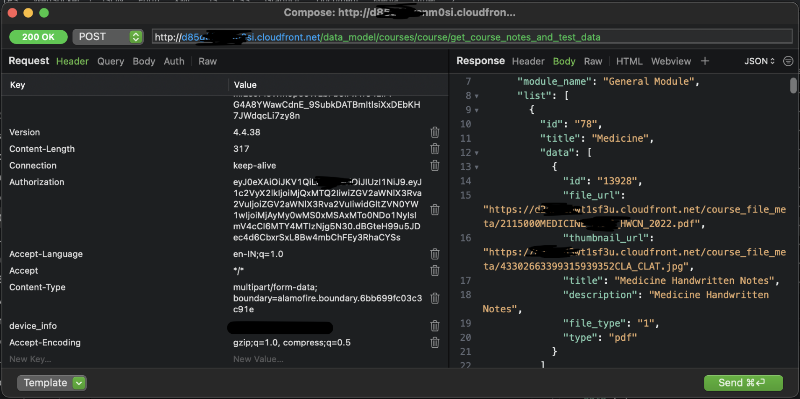
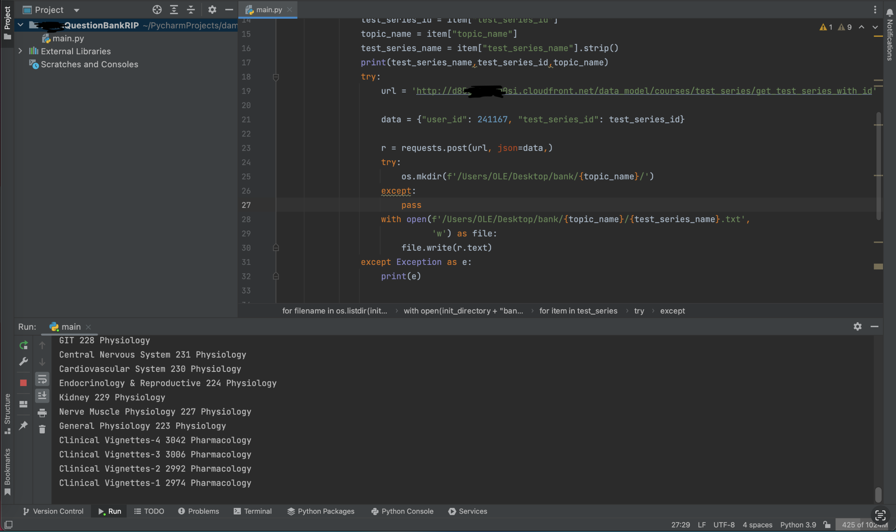
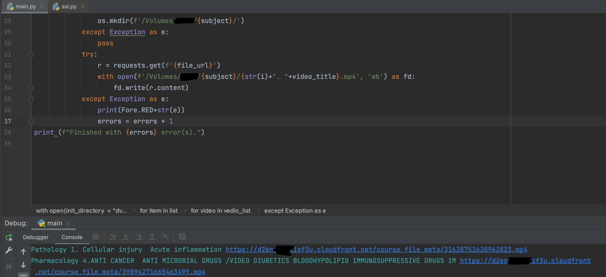
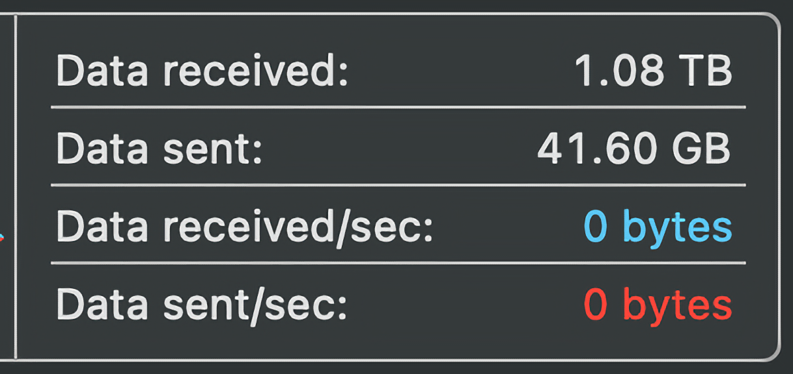
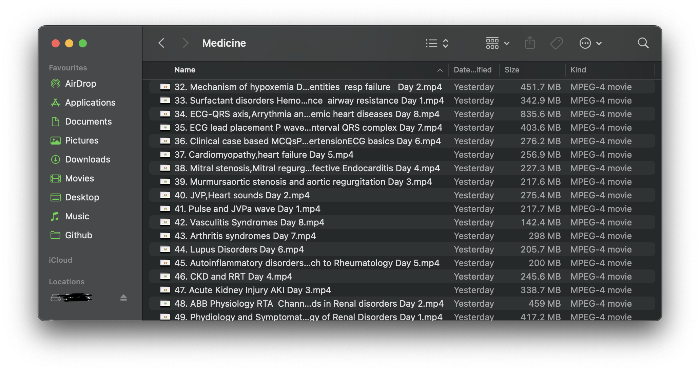

Let's Encrypt Decrypt.
So I needed the videos from this app to study. I used my friend's id and wanted to keep an offline personal copy of all the videos. I discovered three methods to do the same.
The first two methods involved opening each video manually and getting the link by intercepting the traffic. Now this would be feasible but there are more than a couple thousand videos here. It could be automated to a degree but there had got to be a better way.
Intercepting the requests using Proxyman again,

We get a json containing all the video files of the particular course. While it may look like the response is in plaintext, the actual file_url is encrypted.
I used the iOS app to capture the requests but decompiled their Android app to find a fitting method to decrypt this response. My first hint should've been the lack of said method. Surely the backend is the same for both the platforms?
I pinned it to my poor reverse engineering skills and proceeded to investigate further.
I wanted to clear my tracks before I did any experimental server requests so I started to delete the incriminating request headers. I didn't want my friend to get banned after all.
Turns out you could remove them ALL. No I'm not kidding. Even the Authorization is completely OPTIONAL. And look what happens when you remove the headers stating you're an iOS user,
The server gives the response removing all the encryption! They probably haven't implemented it in their Android app ig. Okay so that turned out to be easy. Now to just repeat all these malicious server requests.
Or wait, automate making the malicious requests and store the responses ->
"Why spend 5 minutes solving a problem manually when you can spend 30 automating it?"
And another python script to download them all,
Brilliant! Now to just let this run and rip their entire server!
1TB and counting... There goes this month's FUP limit.
The end result is a hard drive full of educational videos!
I really should be studying these...
14th January, 2023.